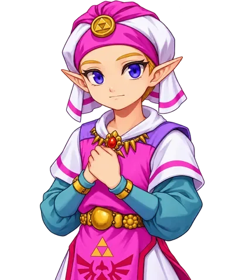

✦ حكايات العوالم
الفصل الأول · البداية

أضف صورة الشخصية إلى assets/character.webp
ليانا
أخيراً وصلتَ... ظننت أن الطريق إلى الوادي قد ابتلعك.
من أنتِ؟ وأين أنا؟
أخبريني لماذا طلبتِ حضوري.
المشهد 1
↻ إعادة من البداية